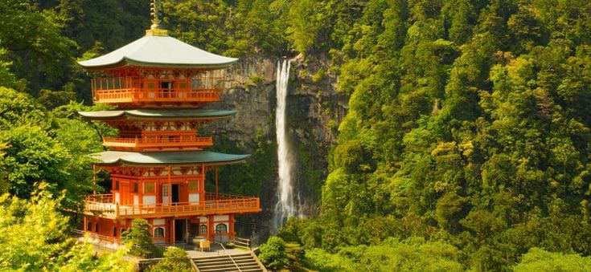

Nachi Waterfall

Air Terjun Nachi (Nachi no Taki) adalah air terjun di Semenanjung Kii, Prefektur Wakayama, Jepang.
Air Terjun Nachi adalah air terjun tunggal tertinggi di Jepang, dengan ketinggian 133 meter (436 kaki). Air terjun ini juga merupakan salah satu air terjun tertua di Jepang, dengan sejarah lebih dari 1.300 tahun.
Air terjun ini terletak di dalam hutan purba yang rimbun, dan dikelilingi oleh beberapa pura dan tempat pemujaan. Pengunjung air terjun dapat berjalan di sepanjang jalan setapak yang mengarah ke dasar air terjun, atau naik kereta gantung ke puncak air terjun untuk melihat pemandangan dari atas.
Air Terjun Nachi adalah tujuan wisata yang populer, dan sangat populer selama bulan-bulan musim panas ketika cuaca hangat dan cerah. Air terjun ini juga merupakan tempat ziarah populer bagi penganut Shinto dan Budha.